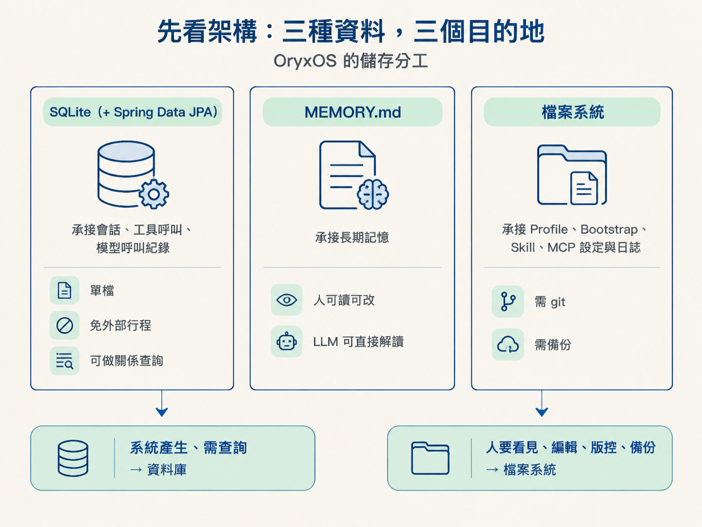
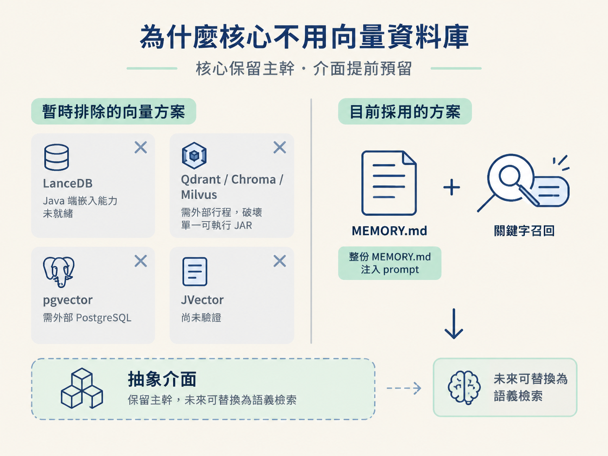
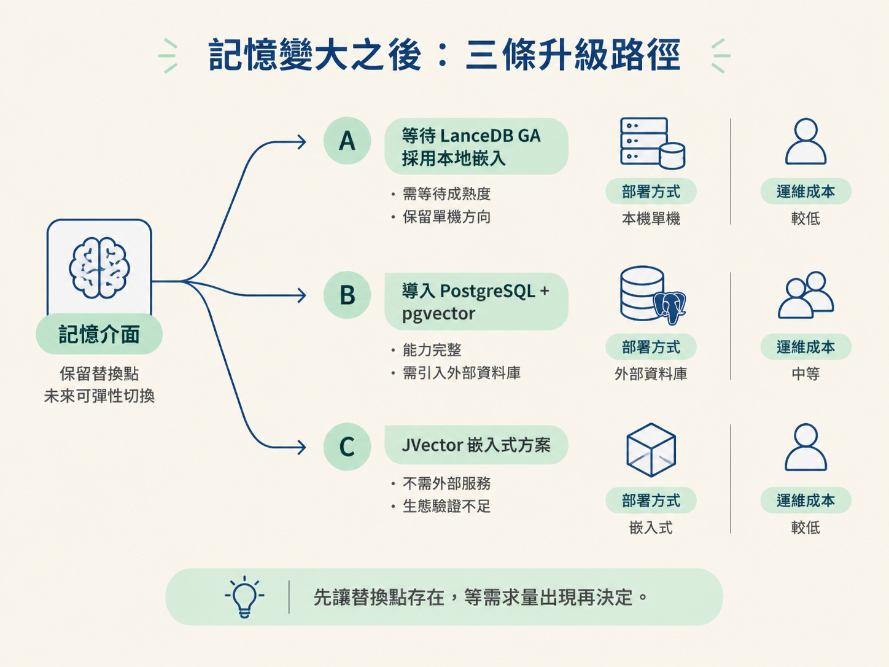

Agent 跑過一輪之後，會留下會話、工具呼叫、模型呼叫與長期記憶。這些資料如果全部塞進同一個地方，查詢、維護和備份很快就會互相牽制。OryxOS 的做法是先按「誰要使用、怎麼使用」分層：系統狀態交給 SQLite，長期記憶留在可讀的 MEMORY.md，需要人維護的設定則放在檔案系統。
這篇會說明這個分工為什麼成立，也會交代未來要升級語義檢索時，如何在不改動上層介面的前提下替換底層儲存。
Agent 系統產生的資料，不是都用同一種方式讀取。OryxOS 的核心只使用三種儲存，各自負責一類資料：
| 儲存 | 放什麼 | 選它的理由 |
|---|---|---|
| SQLite（+ Spring Data JPA） | 會話、工具呼叫、模型呼叫紀錄 | 單檔、免外部行程，還能做關係查詢 |
| MEMORY.md | 長期記憶 | 人可以讀、可以手動修改，LLM 也能直接解讀 |
| 檔案系統 | Profile、Bootstrap、Skill、MCP 設定、日誌 | 使用者需要維護，也需要 git 與備份 |
這個分工的判斷方式很實用：系統自己產生、需要查詢的狀態，放資料庫；使用者需要看見、編輯、版控或備份的內容，放檔案系統。

「長期記憶」很容易讓人聯想到向量資料庫：先把文字轉成向量，再用語義相似度找回相關內容。不過，核心階段的 OryxOS 暫時不採用這條路，因為當下的代價高於收益。
所以核心採用一個比較樸素、但容易掌握的方案：整份 MEMORY.md 注入 prompt，再搭配關鍵字召回。這不是認為向量檢索沒有價值，而是把更複雜的檢索延後到擴展階段。
關鍵在於，擴展不是日後才臨時重做。核心先把介面留好，之後可以替換記憶的實作，而不用牽動上層流程。這就是「核心保留主幹，介面提前預留」的具體回報。

關係型資料庫裡有三張主要的表：
sessions——保存會話的 metadata，以及 JSON 格式的歷史。tool_invocations——保存每一次工具呼叫。llm_calls——保存每一次模型呼叫，包括 provider、模型與 tokens。其中，後兩張是審計表。它們的價值不在於今天立刻提供查詢端點，而在於從第一天開始留下完整紀錄。等到需要追查某次工具執行、模型選擇或 token 使用量時，資料已經存在，不必事後猜測。
不過，SQLite 的 schema 演進要小心。它的 ALTER TABLE 能力較弱，而 Hibernate 的 ddl-auto=update 對 schema 變更也不可靠。正式環境應該手寫遷移腳本，或導入 Flyway／Liquibase。
這是一個常見的工程陷阱：自動更新在早期看起來省事，但資料表一旦進入正式使用，錯誤的 schema 變更就可能變成難以回復的問題。越早把遷移方式固定下來，後面越不容易踩雷。
Profile YAML、Bootstrap 檔、MEMORY.md、SKILL.md、MCP 設定與日誌，都放在檔案系統，而不是塞進資料庫。因為這些內容不只是系統狀態，也是使用者要直接操作的工作材料。
例如，MEMORY.md 留在檔案系統後，使用者可以直接打開它，確認 Agent 記住了什麼，也能手動修正錯誤內容。這種透明度與可控制性，是資料庫表格不容易提供的；對企業要真正敢用 Agent 底座來說，這是重要的設計條件。
當記憶量增加，單靠關鍵字檢索不夠用時，就可以替換底層實作。上層不必跟著改動，因為介面已經先預留好。
| 路徑 | 做法 | 代價 |
|---|---|---|
| A | 等待 LanceDB GA，採用本地嵌入 | 需要等待成熟度 |
| B | 導入 PostgreSQL + pgvector | 需要引入外部資料庫 |
| C | 採用 JVector 嵌入式方案 | 生態系尚未經過大規模驗證 |
三條路的差別，不只是檢索效果，也包括部署方式與運維成本。A 保留單機方向，但要等待元件成熟；B 的能力完整，卻增加外部資料庫；C 不必依賴外部服務，但需要承擔生態驗證不足的風險。
因此核心階段不急著選一條，而是先讓替換點存在。等實際的記憶量與檢索需求出現，再依部署限制和成熟度做決定。

核心階段的選擇不是只靠「先做簡單一點」，而是有數字支撐：
這些數字說明了同一件事：核心階段不是做不到更複雜，而是複雜方案目前不划算。當 1–2ms 的檔案重讀仍可接受、1000 個 sessions 也只佔約 50MB 時，先保留可讀性、可部署性與可替換性，通常比提前引入向量庫更合理。
真正需要升級時，決策也很明確：若瓶頸出現在檢索，就從三條記憶路徑中選擇；若瓶頸出現在啟動，就考慮原生映像；若瓶頸出現在 SQLite 寫入，再引入批次處理。架構先把替換點留好，效能則等實際數字證明需要時再加複雜度。